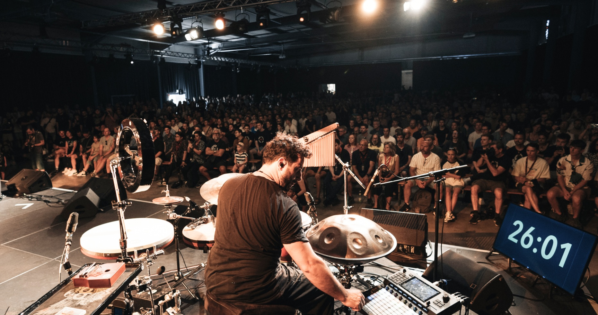
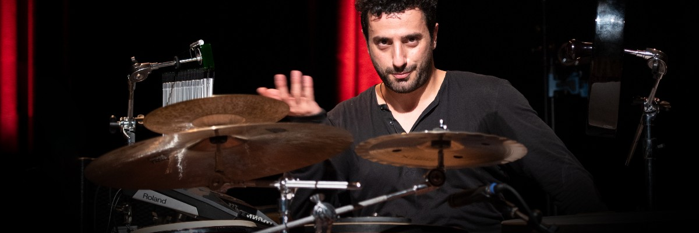

Your browser does not support PDFs. You can download the file instead here.
Interview with Mannheimer Morgen:
"He is a true wizard of pounding, boiling, highly complex rhythms: He drums intricate 13/8 time signatures as if it were child's play. He mixes various drumming patterns into dizzyingly polyrhythmic combinations. And in doing so, he unleashes an almost magical energy that seems to mysteriously encompass sounds from all parts of our world...."

Awards:
Santino Scavelli impresses his audience with his high technical level and unconventional approach. His ability to distill various cultural influences into a common denominator and present them in a new context is groundbreaking for drummers and percussionists of the next generation. Santino has received numerous awards and recognitions, including the Framedrum Award 2018, the YouTube Early Career Award 2019, and the Meinl Outstanding Performance Award 2023.
Through his collaborations with international artists and performances on renowned stages, Santino has developed unmatched expertise. His innovative use of hybrid setups, combining drums and percussion, allows him to produce a wide range of sounds and push musical boundaries. His experience as a studio and live musician has provided him with a deep understanding of the demands and challenges of the music industry.

Milestones
Santino Scavelli's versatility goes beyond the musical.
As a composer and producer, he wrote the music for the documentary film "Die neuen Deutschen" in 2015.
With his band "Pulse Project," Santino Scavelli played at venues such as the ElbPhilarmonie with the "Chor zur Welt" and at the renowned "Openjazz" festival. Since 2018, he has directed the production "Istanbul" .. "as musical director, which has been performed over 50 times at the National Theater Mannheim.
With Anika Nilles, he is a permanent member of her band, touring across Europe since 2021, playing at venues like "Ronnie Scott" in London and at the "Leverkusener Jazztage" .. " In 2023, the band Nevell was nominated for the German Jazz Award in the Drums and Percussion category and performed as a headliner at the award ceremony in Bremen.

Vision and Mission
Santino Scavelli's vision goes beyond the mere fusion of percussion and drums. He aims to usher in a new era in which the conventional boundaries between different percussion instruments disappear.
In his vision, every percussion and drum instrument serves as a source of inspiration for unique sounds, innovative techniques, and captivating grooves.
His goal is to create an inclusive and creative environment where musicians not only learn traditional playing techniques but are also encouraged to explore new paths and develop their own style. Through the fusion of percussion and drums, Santino aims to honor the diversity and rich history of these instruments while also creating new, exciting possibilities for their use.